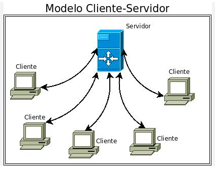
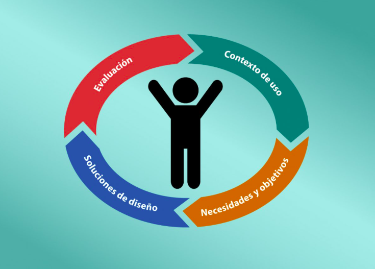

Arquitectura Cliente/Servidor en Desarrollo Web
La arquitectura cliente/servidor es un modelo fundamental en el desarrollo web, en el cual el cliente (generalmente un navegador) realiza peticiones y el servidor responde con los recursos solicitados, como páginas web o datos. Este enfoque facilita la separación de responsabilidades, optimiza el rendimiento y permite la escalabilidad de aplicaciones modernas.
Ventajas: Gestión centralizada: Los datos y recursos se gestionan en un servidor central, facilitando su actualización y mantenimiento. Escalabilidad: Permite que múltiples clientes se conecten al mismo servidor, y el sistema puede crecer fácilmente. Distribución de tareas: Las cargas de trabajo se dividen, lo que mejora la eficiencia.

Diseño Centrado en el Usuario
El diseño centrado en el usuario se enfoca en comprender las necesidades, características y expectativas de las personas que interactúan con un sistema. Este enfoque busca crear experiencias accesibles, usables y satisfactorias, mejorando la interacción entre las aplicaciones y sus usuarios finales.
Tomando lo anterior como base, podemos entender que el Diseño Centrado en el Usuario, conocido también o DCU (en inglés User Centered Design o UCD), pone al usuario como el centro del diseño y desarrollo de cualquier producto o servicio, tomando en cuenta sus necesidades, objetivos y retroalimentación.

Importancia de la Investigación en el Entorno para el Análisis de Requisitos
La investigación del entorno es clave durante el análisis de requisitos, ya que permite identificar factores sociales, técnicos, culturales y organizacionales que influyen en el desarrollo de un sistema. Este proceso asegura que las soluciones propuestas sean viables, relevantes y ajustadas a las necesidades reales del contexto.
El análisis de requisitos es una fase crucial en el proceso de desarrollo de software. Se trata de una etapa inicial en la cual un analista busca entender las necesidades del cliente y traducirlas en un conjunto de requisitos claros y bien definidos. Usualmente, los desarrolladores se sienten tentados por saltarse la etapa de Análisis e irse directamente a por la etapa de codificación del software, sin considerar los riesgos que supone la aplicación de esta práctica, por lo que en este artículo se explorara cuanta es la importancia del análisis previo al desarrollo de un software.

Referencias
- Blog Infranetworking. (2019, 28 de octubre). Modelo cliente servidor. Infranetworking Blog. https://blog.infranetworking.com/modelo-cliente-servidor/
- Reactive Programming. (2021, 24 de marzo). La arquitectura Cliente-Servidor. Reactive Programming Blog. https://reactiveprogramming.io/blog/es/estilos-arquitectonicos/cliente-servidor